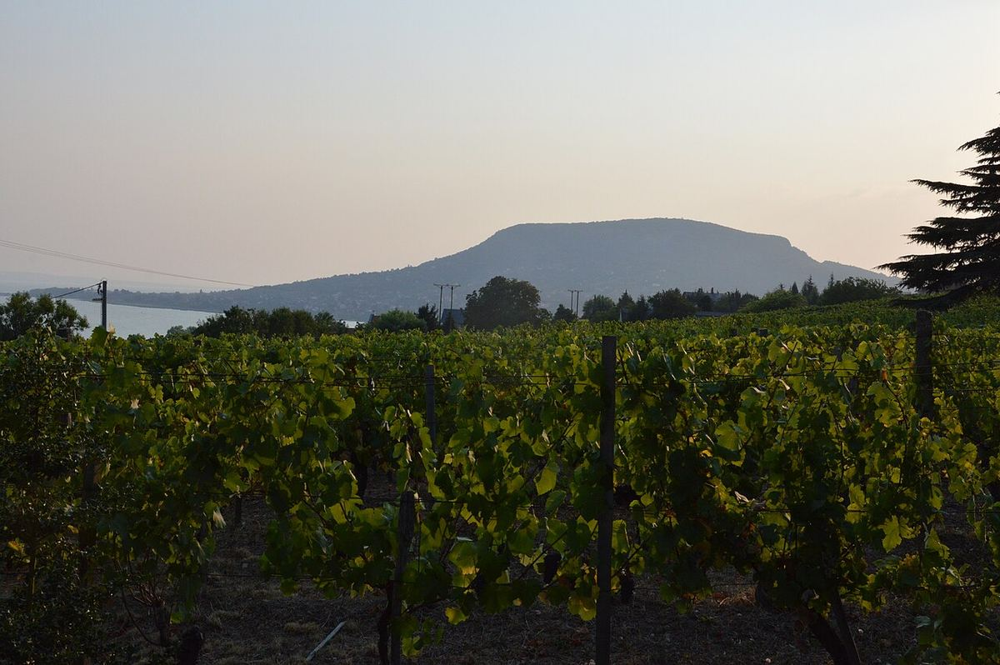

Hongrie
La Hongrie est l’un des pays viticoles historiques d’Europe centrale, célèbre avant tout pour les vins liquoreux de Tokaj élaborés à partir de raisins botrytisés. Elle produit aussi des blancs secs de furmint et des rouges de caractère dans des régions comme Eger et Villány.

Histoire
La vigne était cultivée dans le bassin des Carpates avant l’arrivée des Magyars, et les Romains l’avaient déjà répandue dans la province de Pannonie, à l’ouest du Danube. Après la fondation du royaume de Hongrie, vers l’an 1000, les monastères et la noblesse entretinrent et étendirent les vignobles. À partir des XVIe et XVIIe siècles, la région de Tokaj acquit une renommée internationale qui allait durer des siècles : ses vins liquoreux issus de raisins atteints de pourriture noble, les aszú, devinrent un cadeau diplomatique courant et furent servis dans de nombreuses cours européennes. En 1737, un décret royal délimita la zone de production de Tokaj, l’une des premières délimitations officielles d’une région viticole.
À la fin du XIXe siècle, le phylloxéra détruisit une grande partie du vignoble, replanté sur porte-greffes américains. Après la Seconde Guerre mondiale, le régime communiste regroupa la production dans des fermes d’État et des coopératives tournées vers le volume et l’exportation vers les pays du bloc de l’Est, ce qui fit chuter la réputation de nombreuses zones. Après 1989 vinrent la privatisation, les investissements étrangers, surtout à Tokaj, et le retour de nombreux domaines familiaux. Depuis son entrée dans l’Union européenne en 2004, le pays applique un système d’appellations d’origine de type européen.
Climat et sols
La Hongrie occupe le centre de la plaine pannonienne, protégée par l’arc des Carpates. Le climat est continental, avec des étés chauds et des hivers froids, mais avec d’importantes nuances : le lac Balaton adoucit les températures alentour, le sud, autour de Villány et de Szekszárd, reçoit des influences plus chaudes et le nord montagneux est plus frais. En automne, les brouillards qui se forment au confluent du Bodrog et de la Tisza favorisent à Tokaj le développement du Botrytis cinerea.
Les sols sont très divers. Les sols d’origine volcanique dominent à Tokaj, à Eger, sur la colline de Somló et sur la rive nord du Balaton, à Badacsony. Ailleurs abondent le lœss, les argiles et les calcaires, tandis que dans la Grande Plaine, entre le Danube et la Tisza, prédominent des sols sableux, où se concentre une bonne part du volume du pays.
Cépages et styles
Parmi les blancs, le cépage phare est le furmint, base des vins de Tokaj avec le hárslevelű et le sárgamuskotály (muscat blanc à petits grains). L’olaszrizling (welschriesling) est le cépage blanc le plus planté du pays, très présent autour du Balaton ; on cultive aussi le chardonnay, le sauvignon blanc et des cépages locaux comme le juhfark, le kéknyelű, la leányka ou l’ezerjó. Parmi les rouges, le plus répandu est le kékfrankos (blaufränkisch), aux côtés du kadarka historique, du kékoportó (portugieser) et des cépages bordelais, en particulier le cabernet franc, qui a trouvé à Villány un terrain très favorable.
Les styles sont variés : vins liquoreux de Tokaj (aszú, eszencia, szamorodni), blancs secs minéraux de sols volcaniques, l’assemblage rouge Bikavér (« sang de taureau ») d’Eger et de Szekszárd, rouges structurés de Villány et effervescents de méthode traditionnelle et en cuve close.
Réglementation
Le pays est divisé en 22 régions viticoles (borvidék), regroupées en plusieurs grandes zones. Les vins de qualité relèvent d’appellations d’origine protégées (OEM en hongrois) et d’indications géographiques protégées (OFJ). Certaines appellations, comme Tokaj, Eger ou Villány, ont élaboré leurs propres règles encadrant cépages, rendements et catégories, avec des niveaux de qualité qui distinguent les vins de provenances plus précises.
Régions et appellations
Tokaj
Appellation d’origine protégée (OEM) · Région du nord-est de la Hongrie, au pied des monts Zemplén, célèbre depuis des siècles pour le Tokaji Aszú, un vin liquoreux élaboré à partir de raisins atteints de pourriture noble. Elle produit aussi aujourd’hui des blancs secs de furmint de grand intérêt.
Eger
Appellation d’origine protégée (OEM) · Région du nord de la Hongrie, sur les pentes des monts Bükk, connue surtout pour l’Egri Bikavér, l’assemblage rouge appelé « sang de taureau ». Elle produit aussi l’assemblage blanc Egri Csillag et des vins de cépage.
Villány
Appellation d’origine protégée (OEM) · La région viticole la plus méridionale de Hongrie, près de la frontière croate, est la plus chaude du pays et se consacre surtout à des rouges corsés issus de cépages bordelais, en particulier le cabernet franc.